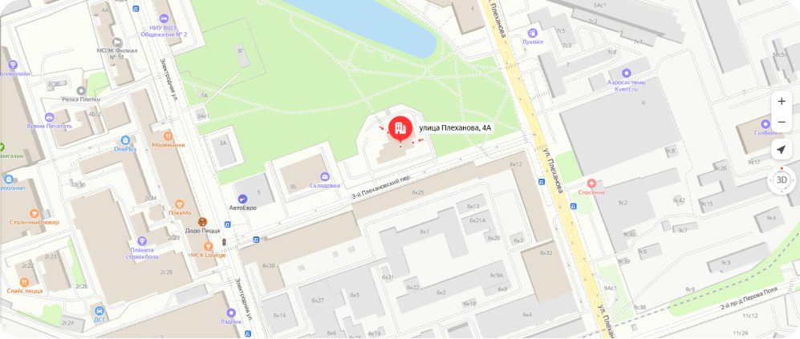

Оперативное реагирование и дистанционная диагностика.
Приём заявок в день обращения Приём заявок в день обращения и дистанционная диагностика.
Приём заявок в день обращения Приём заявок в день обращения и дистанционная диагностика.
Команда инженеров, аккредитованных производителями медтехники.
Средний стаж специалистов — 10 лет Команда опытных инженеров, аккредитованных производителями медтехники.
Средний стаж специалистов — 10 лет Команда опытных инженеров, аккредитованных производителями медтехники.
Собственный склад
запчастей в Москве
запчастей в Москве
Сервис «под ключ»
Техобслуживание
Проводим плановые
технические работы
по долгосрочным контрактам
технические работы
по долгосрочным контрактам

Ремонт
Восстанавливаем
работоспособность медицинской
техники после неисправности
работоспособность медицинской
техники после неисправности

Поставка запчастей
Используем запасные части, принадлежности, расходные материалы
для медицинской техники с собственного склада в Москве.
Организуем оперативные поставки оригинальных деталей
для медицинской техники с собственного склада в Москве.
Организуем оперативные поставки оригинальных деталей

Официальный дистрибьютор брендов
Компьютерные томографы
Мы специализируемся на компонентном ремонте и точной настройке КТ-систем любого класса и уровня сложности. Рентгеновская трубка, система охлаждения, консоль, — где бы ни скрылась поломка, проверим, почистим и запустим.
Оставить заявку

Магнитно-резонансные томографы
Чаще всего для МРТ-аппарата требуется диагностика охлаждающего контура, шиммирование магнитного поля, настройка катушек, регулировка стола. Наши инженеры выполняют полную проверку и ремонт томографа по всем пунктам.
Оставить заявку

Ультразвуковое оборудование
Ультразвуковой кабинет — одна из важнейших частей многопрофильной клиники. К нам обращаются, чтобы избежать длительного
простоя техники. Мы настраиваем программное обеспечение, ремонтируем и заменяем консоли, платы, датчики.
Сертифицированные инженеры исправляют поломки или проводят профилактику неисправностей.
Оставить заявку

Отзывы о работе Сервисного центра

Алексей
Врач УЗД частной практики
На экране УЗИ появились линии. После того как отправил запрос, со мной связались и прислали техника в тот же день. Устранили неисправность за 3 дня. Теперь провожу обследования на данном устройстве.

Наталья
Главный врач
Заключили соглашение по оснащению нашего медцентра. Все приборы привезли в отличном состоянии и оперативно установили. Предоставили все необходимые документы и обучили наших специалистов.

Алина
Старшая медсестра
Два года сотрудничаем с этой компанией. Они мониторят состояние аппаратов УЗИ в разных отделениях. Работу выполняют качественно и вовремя. Всегда в доступе на связи и часто помогали в сложных моментах!

Михаил
Лаборант
Специалисты РМК регулярно осматривают по сервисному контракту наш МРТ-аппарат и заливают гелий. За три года никаких аварийных остановок или поломок.
8
лет
на рынке
сервисных услуг
сервисных услуг
- Лицензии на все виды техобслуживания медтехники, включая источники ионизирующего излучения
- Проведение профилактических работ по техническому регламенту завода-изготовителя
- Обновление программного обеспечения
- Оригинальные запчасти
- Инженеры с опытом: средний страж специалистов Сервисного центра — 10 лет
- Гарантия на ремонтные работы и заменяемые детали
- «Горячая линия» технической поддержки
Сервисный центр РМК
Пн-пт с 9:00 до 18:00
Сб-вс выходные дни
Сб-вс выходные дни

Заявка в Сервисный центр РМК